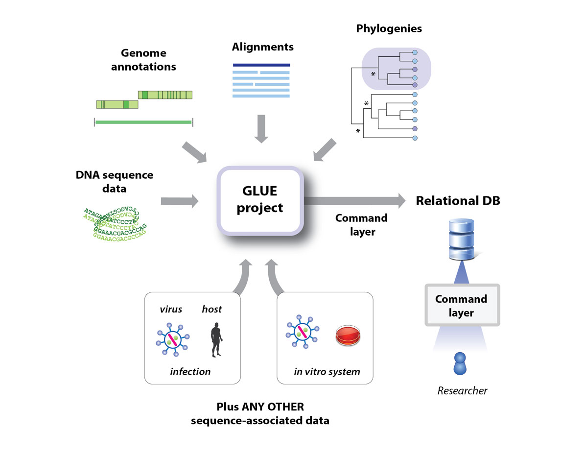
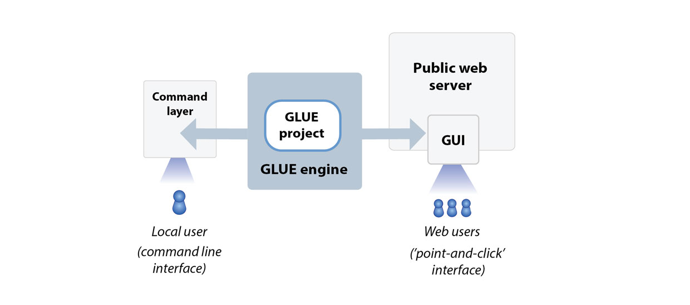

Comparative genomic analysis of parvoviruses using Parvovirus-GLUE
This is Parvovirus-GLUE, a GLUE project designed to support comparative genomic and evolutionary analysis of parvoviruses (family Parvoviridae).
The parvoviruses are a diverse group of small, non-enveloped DNA viruses that infect an extremely broad and phylogenetically diverse range of animal species. The parvovirus family includes numerous pathogens of humans and domesticated animals.
However, parvoviruses are also being developed as next-generation therapeutic tools - for example, rodent protoparvoviruses are promising anticancer agents that show natural oncotropism and oncolytic properties, while adeno-associated viruses (AAVs) have been successfully adapted as gene therapy vectors and are leading candidates for the further development of human gene therapy.

Comparative genomic analysis of parvoviruses can help reveal the biological basis of parvovirus replication. The insights obtained via comparative analysis of parvovirus genomes can directly inform efforts to limit parvovirus-associated disease and develop parvovirus-based therapeutics.
Since the emergence of the SARS-COV2 pandemic, many have become familiar with the use of virus genome data to track the spread and evolution of pathogenic viruses - e.g. via tools such as NextStrain. However, it is less widely appreciated that the same kinds of data sets and comparative genomic approaches can also be used to explore the structural and functional basis of virus adaptations.
The GLUE software framework provides an extensible platform for implementing computational genomic analysis of viruses in an efficient, standardised and reproducible way. GLUE projects can not only incorporate all of the data items typically used in comparative genomic analysis (e.g. sequences, alignments, genome feature annotations) but can also represent the complex semantic links between these data items via a relational database. This 'poises' sequences and associated data for application in computational analysis, minimising the requirement for labour-intensive pre-processing of datasets.
GLUE projects are equally suited for carrying out exploratory work (e.g. using virus genome data to investigate structural and functional properties of viruses) as they are for implementing operational procedures (e.g. producing standardised reports in a public or animal health setting).
Hosting of GLUE projects in an online version control system (e.g. GitHub) provides a mechanism for their stable, collaborative development, as shown below.

What is a GLUE project?
GLUE is an open, integrated software toolkit that provides functionality for storage and interpretation of sequence data.
GLUE supports the development of “projects” containing the data items required for comparative genomic analysis (e.g. sequences, multiple sequence alignments, genome feature annotations, and other sequence-associated data).

Projects are loaded into the GLUE "engine", creating a relational database that represents the semantic relationships between data items. This provides a robust foundation for the implementation of systematic comparative analyses and the development of sequence-based resources.

The core schema of this database can be extended to accommodate the idiosyncrasies of different projects, and GLUE provides a scripting layer (based on JavaScript) for developing custom analysis tools.
Some examples of 'sequence-based resources' built for viruses using GLUE include:
- COV-GLUE: A GLUE resource for tracking genetic variation in SARS-COV2. CoV-GLUE contains a database of amino acid replacements, insertions and deletions which have been observed in GISAID hCoV-19 sequences sampled from the pandemic
- RABV-GLUE: Tailored toward epidemiological tracking of rabies virus (RABV). Includes a database of RABV sequences and metadata from NCBI, updated daily and arranged into major and minor clades, and an analysis tool providing genotyping, analysis and visualisation of submitted FASTA sequences.
- HCV-GLUE: This GLUE resource aims to support analysis of drug resistance and vaccine escape in hepatitis C virus (HCV). A database of HCV sequences and metadata from NCBI, updated daily and arranged into clades (genotypes, subtypes). As well as pre-built multiple-sequence alignments of NCBI sequences, it includes an analysis tool providing genotyping, drug resistance analysis and visualisation of submitted FASTA sequences.
What does building the Parvovirus-GLUE project offer?
Parvovirus-GLUE offers a number of advantages for performing comparative sequence analysis of parvoviruses:
- Reproducibility. For many reasons, bioinformatics analyses are notoriously difficult to reproduce. The GLUE framework supports the implementation of fully reproducible comparative genomics through the introduction of data standards and the use of a relational database to capture the semantic links between data items.
- Reusable data objects and analysis logic. For many - if not most - comparative genomic analyses, data preparation is nine tenths of the battle. The GLUE framework has been designed to ensure that work spent preparing high-value data items such as multiple sequence alignments need only be performed once. Hosting of GLUE projects in an online version control system such as GitHub allows for collaborative management of important data items and community testing of hypotheses.
- Validation. Building GLUE projects entails mapping the semantic links between data items (e.g. sequences, tabular data, multiple sequence alignments). This process provides an opportunity for cross-validation, and thereby enforces a high level of data integrity.
- Standardisation of the genomic co-ordinate space. GLUE projects allow all sequences to utilise the coordinate space of a chosen reference sequence. Contingencies associated with insertions and deletions (indels) are handled in a systematic way.
- Predefined, fully annotated reference sequences: This project includes fully-annotated reference sequences for major lineages within the Hepadnaviridae family.
- Alignment trees: GLUE allows linking of alignments constructed at distinct taxonomic levels via an ""alignment tree" data structure. In the alignment tree, each alignment is constrained to a standard reference sequence, thus all multiple sequence alignments are linked to one another via a standardised coordinate system.
Building this GLUE project
On computers with the GLUE software framework installed, the Parvovirus-GLUE project can be instantiated by navigating to the project folder, initiating GLUE, and issuing the following command in the GLUE shell:
Mode path: /
GLUE> run file buildCoreProject.glue
This will build the Parvovirus-GLUE core project by executing the commands in
this file.
The core project comprises a dataset designed to represent the phylum in a minimal way (i.e. by including only one or a handful of annotated reference sequences for each major lineage).
We have also created genus-level, extension projects individual genera within the subfamily Parvovirinae. These extensions incorporate a more extensive set of species for this virus family. Once the core project has been built, the parvoviridae extension project can be constructed, by executing the commands in this file, as follows.
Mode path: /
GLUE> run file buildGenusLevelProjects.glue
The Parvoviridae genus-level extension projects can be further extended to incorporate EVE sequences by executing the commands in this file, as follows.
Mode path: /
GLUE> run file buildGenusLevelPaleoProjects.glue
The Parvoviridae paleovirus extension incorporates a set of endogenous viral elements (EVEs) recovered from the genomes of metazoan species. Building the paleovirus extension allows automated alignment and phylogeny reconstruction for individual EPV lineages in the project, following the classifications outlined in these files. Individual EPV sequences have been classified into sets considered likely to have arisen from the same germline colonisation event. Loci have been named using a systematic approach (see here for details).
Contributors
Robert J. Gifford (robert.gifford@glasgow.ac.uk)
Mac Campbell (robert.gifford@glasgow.ac.uk)
Related Publications
Campbell M, Loncar S, Gifford RJ, Kotin R, and RJ Gifford
(2021)
Comparative analysis reveals the long-term co-evolutionary history of parvoviruses and vertebrates.
[preprint]
Hildebrandt E, Penzes J, Gifford RJ, Agbandje-Mckenna M, and R Kotin
(2020)
Evolution of dependoparvoviruses across geological timescales – implications for design of AAV-based gene therapy vectors.
Virus Evolution
[view]
Pénzes JJ, de Souza WM, Agbandje-Mckenna M, and RJ Gifford
(2019)
An ancient lineage of highly divergent parvoviruses infects both vertebrate and invertebrate hosts.
Viruses
[view]
Callaway HM, Subramanian S, Urbina C, Barnard K, Dick R, Hafentein SL, Gifford RJ, and CR Parrish
(2019)
Examination and reconstruction of three ancient endogenous parvovirus capsid proteins in rodent genomes.
Journal of Virology
[view]
Singer JB, Thomson EC, McLauchlan J, Hughes J, and RJ Gifford
(2018)
GLUE: A flexible software system for virus sequence data.
BMC Bioinformatics
[view]
Pénzes JJ, Marsile-Medun S, Agbandje-McKenna M, and RJ Gifford
(2018)
Endogenous amdoparvovirus-related elements reveal insights into the biology and evolution of vertebrate parvoviruses.
Virus Evolution
[view]
de Souza WM, Tristan TPW, Fumagalli MJ, Araujo J, Sabino-Santos Jr. G, Maia FGM, Acrani GO, Carrasco AOT, Romeiro MF, Modha S, Vieira LC, Ometto TL, Queiroz LH, Durigon EL, Nunes MRT, Figueiredo LTM, and RJ Gifford
(2018)
Whole-genome sequencing of parvoviruses from wild and domestic animals in Brazil provides new insights into parvovirus distribution and diversity.
Viruses
[view]
Souza WM, Romeiro MF, Fumagalli MJ, Modha S, de Araujo J, Queiroz LH, Durigon EL, Figueiredo LT, Murcia PR, Gifford RJ.
(2017)
Chapparvoviruses occur in at least three vertebrate classes and have a broad biogeographic distribution.
J Gen Virol.
[view]
License
This project is licensed under the GNU Affero General Public License v. 3.0.